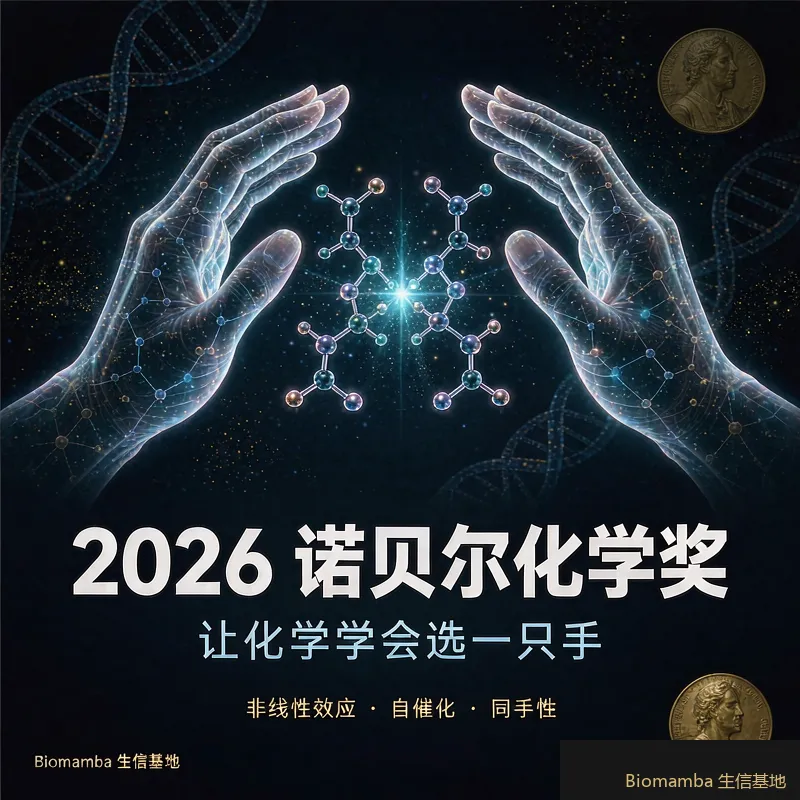
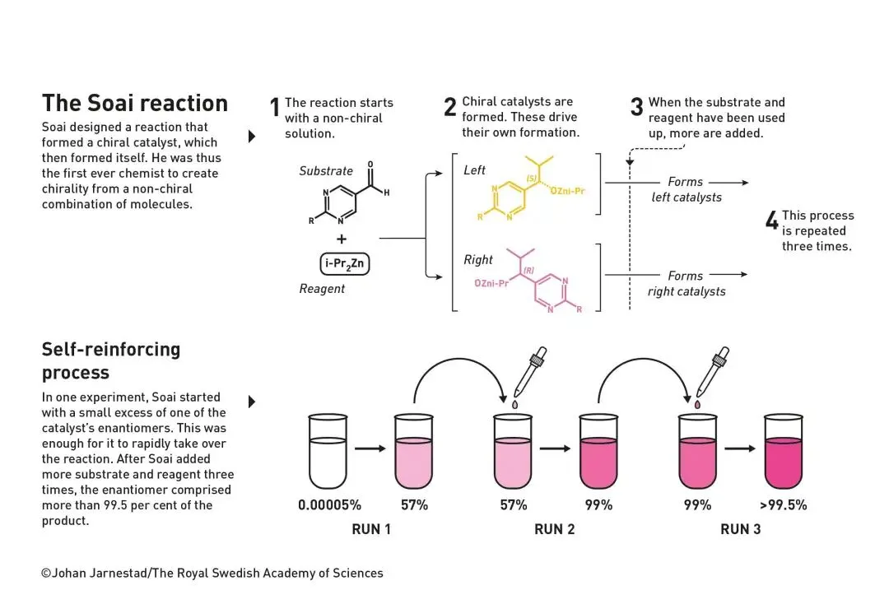

化学奖发给“生命的单手性”：两位倔老头，和一个178年的谜题
原文：https://mp.weixin.qq.com/s?__biz=MzAwMzIzOTk5OQ==&mid=2247542927&idx=3&sn=1f772e6f8a1c6ca650be6b1ad0f72ca9&chksm=9b3c51dfac4bd8c996854952f9ecdca3b5781389b6c1c95745291792d9ebac0d600a8b1969ec#rd 合集：文献速递
前两天我们刚感叹GLP-1 的“大热必死”，今天化学奖就又一次证明了这条定律。本来的热门是二代DNA测序、蛋白质长程电子转移等，不过今年做了一次非常正确的决定：
北京时间10月7日17时45分许，瑞典皇家科学院把2026年诺贝尔化学奖授予两位老人——1930年出生的法国人 Henri B. Kagan （今年95岁）和1950年出生的日本人 Kenso Soai（硖合宪三） ，理由是“在不对称有机合成中发现非线性效应与自催化 ”。没有AI，没有基因编辑，没有蛋白质工程，表面上看，这是一届“纯得不能再纯”的有机化学奖。
但只要你把颁奖词往下读一行，就会发现它回答的其实是一个十足的生物学问题：生命的分子为什么只用“同一只手”？ 你的蛋白质只用左旋氨基酸，DNA 只用右旋糖——这种“同手性”是如何从没有生命的化学世界里自发冒出来的，悬了化学界一百多年。今天，它被两位倔老头解开了。
还记得我们之前的盘点吗——化学奖得主里，超过1/3是“生物人” 。今年这一票，化学奖又一次越界了：这次它直接跨进了生命起源的领地。

第一幕 · 1848
Pasteur 的镊子
故事要从葡萄酒说起。19世纪中叶，Louis Pasteur 盯上了酿酒中常见的酒石酸：同行们吵作一团——同样的物质，有时能让偏振光向右偏，有时却纹丝不动。
Pasteur 的办法朴素得可爱：他把酒石酸养成晶体，放在显微镜下看，发现晶体分成两种——互为镜像。然后他用镊子一颗一颗把两类晶体分开 ，分别溶解，再照偏振光：一种向右偏，一种向左偏，混在一起则互相抵消。
分子居然有“左右手”——这就是手性（chirality）的诞生时刻。更妙的是1857年的续集：Pasteur 发现细菌发酵时，只吃其中一种对映体，对镜像分子碰都不碰。“生命的化学是手性的”这个念头，第一次见了天日。
但谜面也随之写就：化学家在试管里做反应，得到的两种镜像永远是五五开——那生命凭什么只用一只手？
第二幕 · 1953
一位理论物理学家，给化学家出了道题
1953年，布里斯托大学的理论物理学家 Charles Frank 被同事提醒：化学家到现在也没搞懂生命的不对称是怎么来的，你要不帮忙算算？
Frank 给出了一个漂亮的模型：一个化学反应只要同时满足三个条件，就能自发产生同手性——
- 有一个手性催化剂，驱动一个不对称反应；
- 一种镜像的生成被增强，另一种被抑制；
- 反应能生成催化剂自己——自催化 ，让胜者指数级通吃。
这个模型从此成了化学课上的一道“悬赏题”：条件摆在这儿，谁能在真实的烧瓶里把它做出来？
第一个条件，20世纪初的 Marckwald 用第一个不对称催化反应勉强够到；后来者把不对称催化做成了一门显学——2001年 （Knowles、Noyori、Sharpless）和2021年 （List、MacMillan）两届化学奖都发给了它。但 Frank 的后两个条件，一直没人能打上对勾。
第三幕 · 1986
Kagan：所有人默认的东西，他偏要怀疑
时间来到20世纪80年代。反应停丑闻刚过去不久——那种镇静剂的一种镜像治孕吐，另一种镜像却让数千名儿童先天畸形——制药界痛定思痛：必须想办法只合成“对的那只手”。
当时做不对称催化的化学家都有一个默认假设：催化剂里对映体的纯度，会线性地 传导到产物里——催化剂九成纯，产物就九成纯，天经地义。
巴黎南部大学的 Henri Kagan 停下来多想了一步：金属原子明明可以同时拉住多个手性分子，那催化剂就不止一种形态——右-右、左-左，还有一个混血的左-右 。那个混血催化剂，会干什么？
答案揭晓时，所有人都愣住了：左-右催化剂干活慢得多。于是产物中单一镜像的过量程度，可以远超 催化剂本身的过量——作图不是一条直线，而是一条曲线。这就是 非线性效应 。1986年，Kagan 一口气报道了三个这样的反应，Frank 模型的第二个条件，被打上了对勾。
锐评 · 质疑“默认值”的人最值钱
非线性效应的数学并不复杂，复杂的是没有人想过要去质疑那条直线 。Kagan 后来回忆，他只是“花时间仔细想了想催化剂本身”——一句轻描淡写，背后是对教科书默认值的不信任。做生信的朋友应该懂这种感觉：pipeline 里那个所有人都默认合理的参数，往往就藏着最大的问题。
第四幕 · 1995–2003
Soai：再干八年，让偶然性决定左右
东京理科大学的 Kenso Soai 是追着非线性效应进来的人。他盯着一个非线性效应很强的反应看了很久，突然发现：催化剂和产物的结构，长得惊人地像。一个大胆的念头冒了出来——能不能让催化剂自己生成自己？
90年代初，已知的自催化反应没有一个是不对称的。Soai 开始大海捞针般地试分子，最终找到了 5-嘧啶基链烷醇 ——一个能“创造自己”的手性分子。1995年，他报道了那个革命性的实验：从2%的对映过量起步，反应自我增强，一路放大到87%。Frank 的三个条件，第一次在同一个反应里集齐了。
但87%不是生命的答案——生命要的是100%。
于是 Soai 又干了八年。 2003年，他交出了终极版本：一个从完全非手性的原料出发的反应，产物一旦产生微小的过量，就开始自我复制、滚雪球，直到占满整个体系——99.99% 。这是自生命黎明以来，第一次有人在试管里从“无手性”中创造出“手性”。
这个反应最摄人心魄的地方在于：左右由谁赢，纯粹看运气。 反应启动时，偶然性会让某一种镜像多出那么一丁点，然后它接管一切；Soai 重做一遍实验，赢的可能是另一只手。化学，第一次在试管里重演了生命“选择左右手”的那一刻。

Soai 反应：产物催化自身的生成，微小的偶然过量被放大成99.99%的“单手”。© Johan Jarnestad/The Royal Swedish Academy of Sciences锐评
这届化学奖，藏着四个信号
1. 化学奖又一次“越界”生物——1/3 定律继续生效
我们之前盘点过：193位化学奖得主中，68人因生物相关研究获奖，超过1/3。今年这两位得主是硬核有机化学家不假，但他们回答的问题是标准的“生命之问”——同手性如何起源。官方科普材料的结尾写得明白：世界各地的研究者正试图用同样的思路，去合成同手性的氨基酸和糖 。这枚化学奖，半个身子已经站进了生命起源的领地。
2. 大热必死，再次应验
开奖前，预测名单上挤满了 AI for Science 和基因编辑，GLP-1 相关方向也挂着引文桂冠——我们昨天刚为它写过一篇“陪跑十年”的意难平。结果委员会转身把奖发给了一个1848年提出、1986和2003年才分两步解决的老谜题。诺奖从不奖励热度，它奖励“把一道题彻底解掉”的人。
3. 诺奖奖励的，是“思想之链”的完成者
官方材料罕见地把这条链完整画了出来：1848年 Pasteur 的镊子 → 1953年 Frank 的三个条件 → 1986年 Kagan 的非线性效应 → 1995/2003年 Soai 的自催化，横跨178年、四代人。Kagan 1986年的突破等了40年才等到斯德哥尔摩的电话，Soai 从第一篇关键论文算起也等了28年。两位都是荣休教授——诺奖的耐心，有时候比科学家还长。
4. 对生物人意味着什么：手性从来不远
做药的朋友最懂：同一个分子的左右手，一只是药，一只是毒——反应停是用几千个孩子的代价上的课。今天，Kagan 的非线性效应已是制药、香料、农化行业优化反应、追求纯净对映体的标准工具；官方材料特意点名了这四类产业。而对做单细胞、做组学的我们来说，L-氨基酸与 D-糖这对“默认参数”，正是所有数据得以存在的前提——今年这枚化学奖，奖励的正是这个默认参数的来历。
写在最后
Soai 反应最迷人的一点是：把实验重做一遍，赢的可能是另一只手。
这意味着，地球上所有生命统一用左旋氨基酸、右旋糖，也许并不是什么必然——在生命黎明的那次化学抽签里，抽到哪只手，纯粹是偶然。 但只要抽过一次，自催化就会让那只手赢下全部。
Pasteur 用镊子分晶体时不会想到，178年后，两位化学家会因为“解释生命为什么单手”而获得诺贝尔奖。而1930年出生的 Kagan 和1950年出生的 Soai 用一生证明了一件事：
真正伟大的问题不怕冷板凳——它只会把等得最久的人，送上领奖台。
参考与资料来源
1. The Royal Swedish Academy of Sciences. Press release & Popular information, Nobel Prize in Chemistry 2026. https://www.nobelprize.org/prizes/chemistry/2026/
2. Kagan 1986年非线性效应原始论文：J. Am. Chem. Soc. 1986, 108, 2353–2357（官方科普材料图5出处）
3. 本号往期：《2026诺奖_GLP1大热必死》《物理奖里有过多少“生物人”》（含化学奖“1/3是生物人”统计口径）
4. 官方插图：© Johan Jarnestad/The Royal Swedish Academy of Sciences（免费用于非商业用途）
如果这个“偶然决定左右手”的故事打动了你，点个“在看”，让更多人看到生命的这次抽签。

欢迎交流

 留一个领取资料、开箱即用的单细胞分析镜像的助手[Biomamba_zhushou]，方便各位随时交流。同时我们也构建了交流群矩阵，欢迎大家一起讨论。
留一个领取资料、开箱即用的单细胞分析镜像的助手[Biomamba_zhushou]，方便各位随时交流。同时我们也构建了交流群矩阵，欢迎大家一起讨论。
 您点的每个赞和在看，我都认真当成了喜欢
您点的每个赞和在看，我都认真当成了喜欢